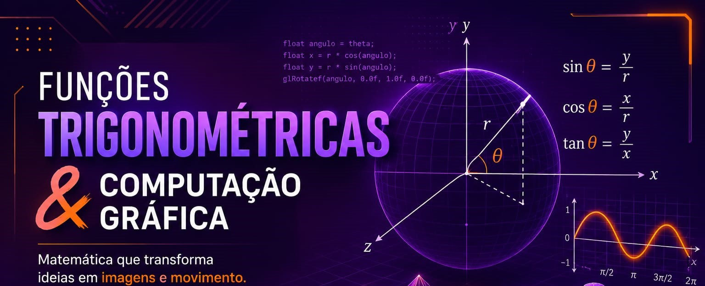

As funções trigonométricas são indispensáveis na computação gráfica, pois permitem representar e calcular direções, ângulos e posições de objetos em ambientes tridimensionais. Conceitos como seno, cosseno e tangente são utilizados para transformar informações angulares em coordenadas que podem ser processadas pelos computadores.
Um dos principais exemplos dessa aplicação é o uso das coordenadas esféricas, que representam um ponto ou vetor por meio de dois ângulos (θ e φ) e, quando necessário, pela distância em relação à origem (r). Com o auxílio das funções trigonométricas, essas coordenadas podem ser convertidas para o sistema cartesiano (x, y, z), tornando possível posicionar e movimentar objetos em um espaço 3D.
Essa relação é amplamente utilizada em técnicas de renderização, iluminação, sombreamento, animações e no controle da posição e orientação de câmeras virtuais. Graças aos cálculos trigonométricos, é possível criar cenas mais precisas e realistas, proporcionando uma experiência visual de alta qualidade em jogos, filmes, simuladores e outras aplicações gráficas.
Dessa forma, as funções trigonométricas são a base matemática que torna possível o funcionamento das coordenadas esféricas e de diversos processos da computação gráfica, sendo essenciais para o desenvolvimento de ambientes tridimensionais modernos.
Arthur Fellipe da Luz Santana, Lázaro Mendonça Mota da paz, Mayra Santos Marçal, Rai Cleidson Conceição de Paula, Thaylla Santos Argolo